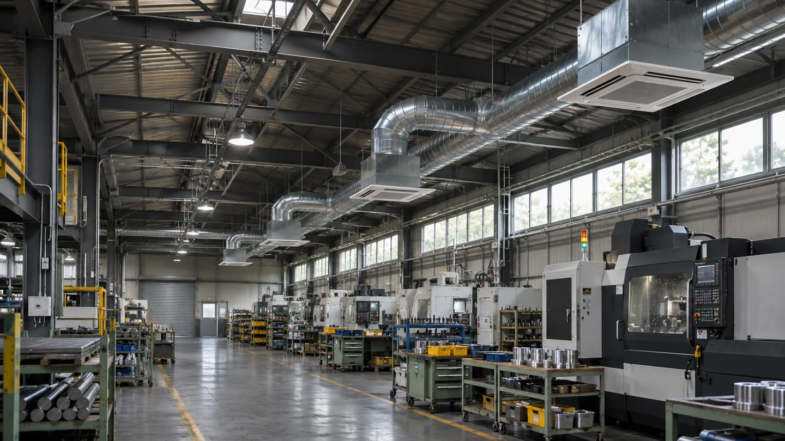

作業者に冷気が届かない
機械の排熱が加工エリアに滞留し、天井近くを通る冷気が作業位置まで下りない状態を想定しました。

暑さの原因も、工事に使える時間も、工場ごとに違います。
まず現場を見て、生産計画に合わせた改修を考えます。
01 / CASE STUDY
設備を増やす前に、冷気が届かない理由を調べた事例です。
機械の排熱が加工エリアに滞留し、天井近くを通る冷気が作業位置まで下りない状態を想定しました。
熱源に近い場所で排気し、給気口は作業位置に合わせて見直す。既設設備も活かし、休日に区画ごとに切り替える計画です。
改修前後で作業位置の温湿度と設備の消費電力を比較します。この作例には実測値や効果の保証は掲載していません。
02 / PROJECT FLOW
暑さの出る場所と時間帯、設備、作業位置を確認。
優先する場所と工事日を決め、既設を活かす案も比較。
区画ごとに施工し、改修前と同じ位置で状況を確認。
03 / CONSULTATION
工場の図面がなくても相談できます。分かる範囲で、次の3点があると話が進めやすくなります。